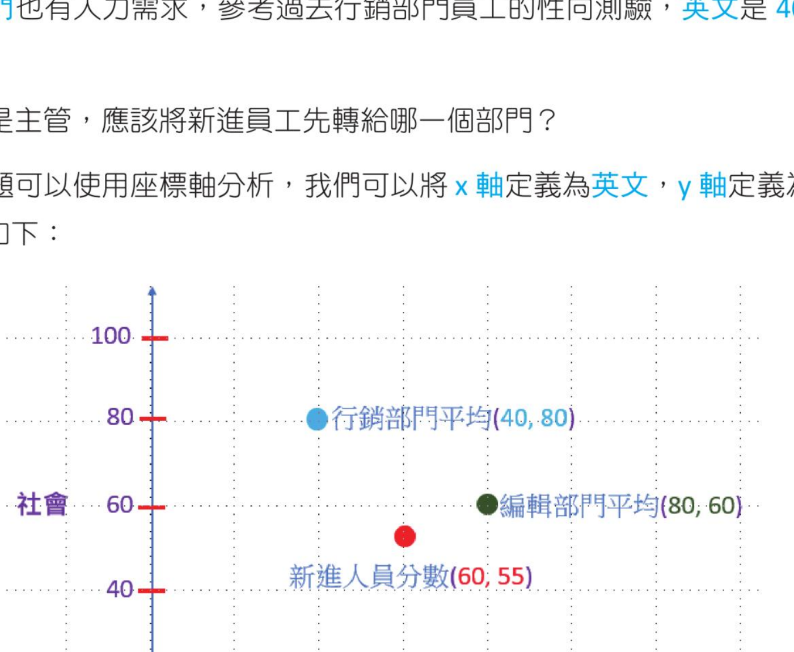
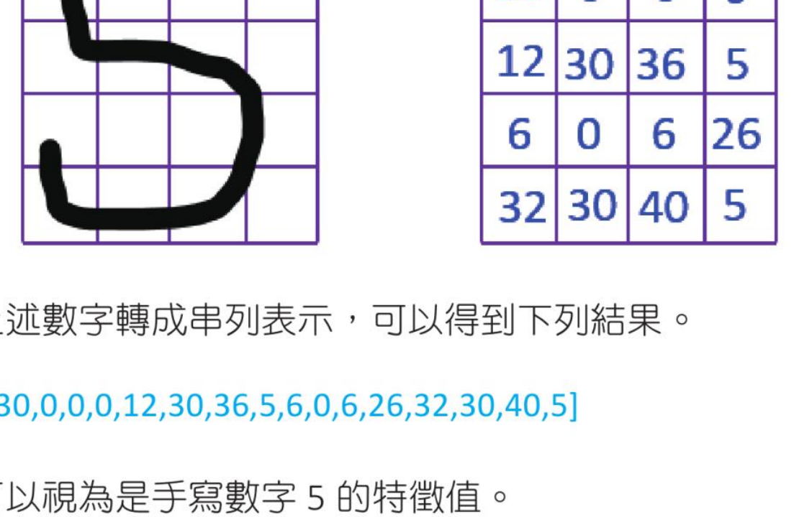
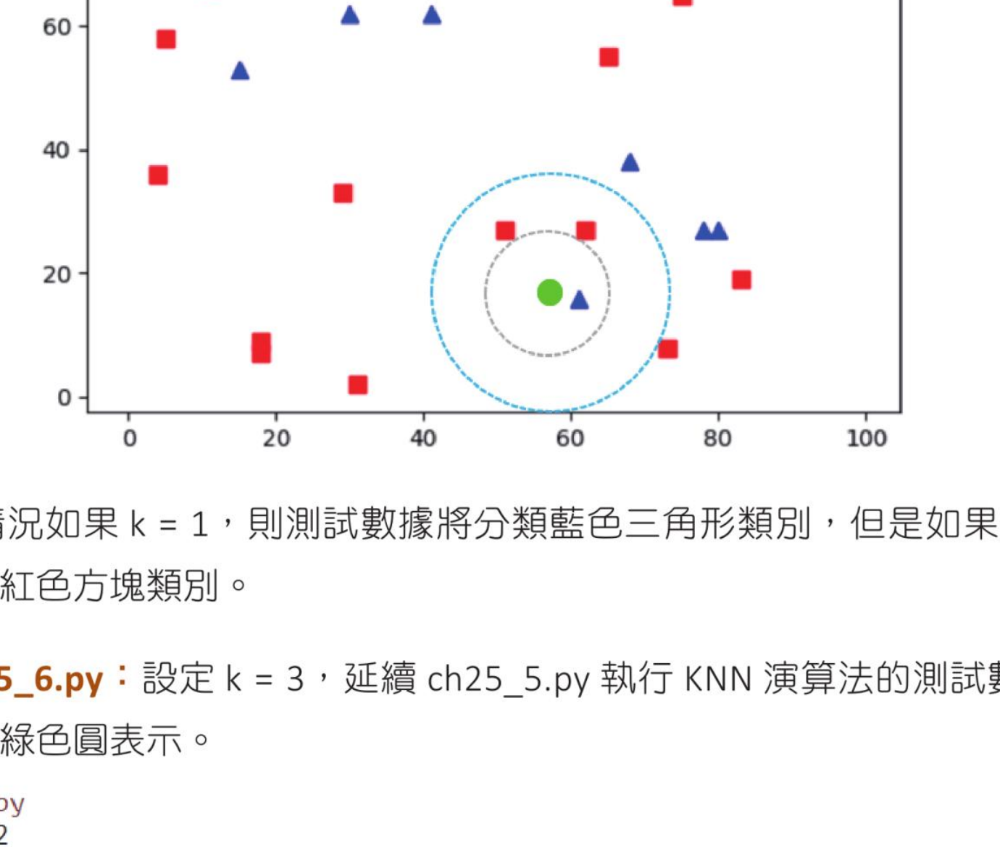

第 25 章
辨识手写数字
KNN 演算法 · Numpy 基础 · OpenCV KNN 函数 · digits.png 手写数字识别
这一章将叙述 KNN 演算法，执行识别手写数字。
25-1
认识 KNN 演算法
KNN 全名是 K-Nearest Neighbor，可以翻译为 K 最近邻演算法。
25-1-1 数据分类的基础观念
有一家公司的人力部门录取了一位新进员工，同时为新进员工做了英文和社会的性向测验，这位新进员工的得分，分别是英文 60 分、社会 55 分。公司的编辑部门有人力需求，参考过去编辑部门员工的性向测验，英文是 80 分，社会是 60 分。行销部门也有人力需求，参考过去行销部门员工的性向测验，英文是 40 分，社会是 80 分。如果你是主管，应该将新进员工先转给哪一个部门呢？
这类问题可以使用座标轴分析，我们可以将 x 轴定义为英文，y 轴定义为社会，整个座标说明如下：

以座标轴表示新进人员、编辑部门平均与行销部门平均。
这时可以使用新进人员的分数点比较靠近哪一个部门平均分数点，然后将此新进人员安插至性向比较接近的部门。
计算新进人员分数和编辑部门平均分数的距离
可以使用毕氏定理执行新进人员分数与编辑部门平均分数的距离分析：
dist = √(80 - 60)2 + (60 - 55)2 = √425 = 20.6
计算新进人员分数和行销部门平均分数的距离
可以使用毕氏定理执行新进人员分数与行销部门平均分数的距离分析：
dist = √(40 - 60)2 + (80 - 55)2 = √1025 = 32.0
因为新进人员的性向测验分数与编辑部门比较接近，所以新进人员比较适合进入编辑部门。
25-1-2 手写数字的特征
上一小节我们使用了考试分数当作特征值，相对容易。假设我们现在想要取得手写数字的特征，相对复杂一些，不过 OpenCV 已经有提供实际文件供我们使用，所以复杂的部分已经隐藏了。有一个数字使用 5 列、4 行表示，如下：

将数字 5 分成 20 个小方块，再以每个小方块中的像素点数量当作特征。
上述数字内共有 20 个方块，假设我们将每个方块又拆成 10×10 个像素点，这时我们可以使用此手写数字所占据的像素点数量当作数字 5 的特征。如果以上述数字 5 为例，可以得到下列从左到右、从上到下的像素点数量：
[18,30,30,6,30,0,0,0,12,30,36,5,6,0,6,26,32,30,40,5]
上述串列就可以视为是手写数字 5 的特征值。
25-1-3 不同数字特征值的比较
其他 0-9 的数字也可以依此方式计算特征值，下列是数字 5 与数字 8 的特征值比较：
25-1-4 手写数字分类原理
假设右边有一个数字特征如下：
到底右边需要辨识的数字比较接近左边哪一个数字，这时就必须使用毕氏定理。因为有 20 个特征数字，所以右边数字与 5 的距离计算公式如下：
dist = √(18 - 18)2 + (30 - 30)2 + ... + (5 - 8)2
右边数字与 8 的距离计算公式如下：
dist = √(20 - 18)2 + (30 - 30)2 + ... + (20 - 8)2
我们可以从上述计算结果，由距离比较小判断待辨识数字属于 5 或 8。
25-1-5 简化特征比较
假设我们简化上述特征值为 2×2 特征，如下：
这时可以得到右边数字与 5 的距离计算公式如下：
dist = √(30 - 30)2 + (16 - 12)2 + (22 - 8)2 + (28 - 32)2 ≈ 15.1
右边数字与 8 的距离计算公式如下：
dist = √(34 - 30)2 + (34 - 12)2 + (32 - 8)2 + (32 - 32)2 ≈ 32.8
经过计算因为右边数字距离 5 比较近，所以我们将需要辨识的手写数字分类为 5。
25-2
认识 Numpy 与 KNN 演算法相关的知识
本书第 3 章已有介绍 Numpy 模组，这一节则是补充更多说明。在正式介绍使用 KNN 演算法执行数字辨识之前，笔者想先介绍相关基础的 Numpy 知识，这样未来读者看到正式的手写数字辨识程式，可以快速了解相关语法与掌握知识。
25-2-1 Numpy 的 seed() 函数
请参考 3-3-7 节的 randint() 函数，当我们使用 randint() 函数时，可以建立指定维度的阵列，但是每次执行时，均会产生不同元素的阵列。
程式实例 ch25_1.py：建立含 5 个元素的一维阵列和建立 5×1 的矩阵，同时示范取得第 0 个元素的方法。
# ch25_1.py
import numpy as np
data1 = np.random.randint(0, 10, size=5)
print(f"阵列外形 = {data1.shape}")
print(f"输出阵列 = {data1}")
print(f"data1[0] = {data1[0]}")
data2 = np.random.randint(0, 10, size=(5, 1))
print(f"矩阵外形 = {data2.shape}")
print(f"输出矩阵 = \n{data2}")
print(f"data2[0] = {data2[0]}")
print(f"data2[0,0] = {data2[0,0]}")
阵列外形 = (5,)
输出阵列 = [8 6 2 1 5]
data1[0] = 8
矩阵外形 = (5, 1)
输出矩阵 =
[[8]
[9]
[4]
[3]
[0]]
data2[0] = [8]
data2[0,0] = 8
上述笔者执行了 2 次，每一次执行结果皆产生了不一样的随机数。Numpy 提供了 seed(n) 函数，这可以称是种子函数，n 是种子值，可以是 32 位元无号整数，当设了种子值后，未来将产生相同的随机数。
程式实例 ch25_2.py：使用 np.random.seed(5)，未来可以产生固定的随机数。
# ch25_2.py
import numpy as np
np.random.seed(5)
data1 = np.random.randint(0, 10, size=5)
print(f"阵列外形 = {data1.shape}")
print(f"输出阵列 = {data1}")
print(f"data1[0] = {data1[0]}")
data2 = np.random.randint(0, 10, size=(5, 1))
print(f"矩阵外形 = {data2.shape}")
print(f"输出矩阵 = \n{data2}")
print(f"data2[0] = {data2[0]}")
print(f"data2[0,0] = {data2[0,0]}")
阵列外形 = (5,)
输出阵列 = [3 6 6 0 9]
data1[0] = 3
矩阵外形 = (5, 1)
输出矩阵 =
[[8]
[4]
[7]
[0]
[0]]
data2[0] = [8]
data2[0,0] = 8
上例执行了两次，每次执行结果皆相同。这本书是以教学为目的，未来笔者讲解 KNN 演算法时，产生固定值的随机数可以方便讲解，读者也可以由固定的随机数方便理解。
25-2-2 Numpy 的 ravel() 函数
Numpy 的 ravel() 函数可以将多维阵列转为一维阵列。
程式实例 ch25_3.py：将二维阵列 data 转为一维阵列。
# ch25_3.py
import numpy as np
data = np.random.randint(0, 10, size=(5, 1))
print(f"输出二维阵列 = \n{data}")
print(f"转成一维阵列 = \n{data.ravel()}")
输出二维阵列 =
[[9]
[5]
[2]
[5]
[6]]
转成一维阵列 =
[9 5 2 5 6]
25-2-3 数据分类
在机器学习领域我们常常要将数据分类，这一节将简单讲解使用 Numpy 执行数据随机分类的方法。
程式实例 ch25_4.py：建立 5×2 的二维阵列，然后建立 1×5 的分类阵列索引；0 归到红色 red 类，1 归到蓝色 blue 类。
# ch25_4.py
import numpy as np
np.random.seed(1)
trains = np.random.randint(0, 10, size=(5, 2))
print(f"输出二维阵列 \n{trains}")
# 建立分类，未来 0 代表 red，1 代表 blue
np.random.seed(5)
labels = np.random.randint(0, 2, (5, 1))
print(f"输出颜色分类阵列 \n{labels}")
# 列出 0 代表的红色
red = trains[labels.ravel() == 0]
print(f"输出红色的二维阵列 \n{red}")
print(f"配对取出 \n{red[:, 0], red[:, 1]}")
# 列出 1 代表的蓝色
blue = trains[labels.ravel() == 1]
print(f"输出蓝色的二维阵列 \n{blue}")
print(f"配对取出 \n{blue[:, 0], blue[:, 1]}")
输出二维阵列
[[5 8]
[9 5]
[0 0]
[1 7]
[6 9]]
输出颜色分类阵列
[[1]
[0]
[1]
[1]
[0]]
输出红色的二维阵列
[[9 5]
[6 9]]
配对取出
(array([9, 6]), array([5, 9]))
输出蓝色的二维阵列
[[5 8]
[0 0]
[1 7]]
配对取出
(array([5, 0, 1]), array([8, 0, 7]))
25-2-4 建立与分类 30 笔训练数据
程式实例 ch25_5.py：假设 (x, y) 代表数据的特征，这个程式会绘制 30 笔训练数据，并以 0 或 1 分别标记为红色方块或蓝色三角形。
# ch25_5.py
import numpy as np
import matplotlib.pyplot as plt
num = 30
np.random.seed(5)
trains = np.random.randint(0, 100, size=(num, 2))
np.random.seed(1)
# 建立分类，未来 0 代表 red，1 代表 blue
labels = np.random.randint(0, 2, (num, 1))
# 列出红色方块训练数据
red = trains[labels.ravel() == 0]
plt.scatter(red[:, 0], red[:, 1], 50, "r", "s") # 50 是绘图点大小
# 列出蓝色三角形训练数据
blue = trains[labels.ravel() == 1]
plt.scatter(blue[:, 0], blue[:, 1], 50, "b", "^") # 50 是绘图点大小
plt.show()
25-3
OpenCV 的 KNN 演算法函数
25-3-1 基础实作
要使用 KNN 演算法需要首先使用 cv2.ml.KNearest_create() 建立 KNN 物件，可以使用下列语法：
knn = cv2.ml.KNearest_create()
接著使用 train() 训练数据，语法如下：
knn.train(train, cv2.ml.ROW_SAMPLE, labels)
上述参数 train 是训练的数据，cv2.ml.ROW_SAMPLE 是将整个阵列的长度视为 1，labels 是分类的结果，这个函数执行成功会回传 True。
假设测试数据是 test，可以使用下列语法执行 KNN 演算法的测试数据分类。
ret, results, neighbours, dist = knn.findNearest(test, k=n)
上述 results 是数据分类的结果，neighbours 是目前相邻数据的分类，dist 是目前相邻数据的距离。findNearest() 函数所传递的参数 test 是测试数据，k 是设定依据多少组数据作判断。如果 k=1 代表是 1-KNN 演算法，如果 k=3 代表是 3-KNN 演算法，其他依此类推。
其实 k 值会影响判断结果，假设有一个测试数据用绿色圆表示，此数据的特征图如下：

如果 k=1，测试数据将分类为蓝色三角形；如果 k=3，测试数据将分类为红色方块。
程式实例 ch25_6.py：设定 k=3，延续 ch25_5.py 执行 KNN 演算法的测试数据分类，将测试数据用绿色圆表示。
# ch25_6.py
import cv2
import numpy as np
import matplotlib.pyplot as plt
num = 30
np.random.seed(5)
# 建立训练数据 train，需转为 32 位元浮点数
trains = np.random.randint(0, 100, size=(num, 2)).astype(np.float32)
np.random.seed(1)
# 建立分类，未来 0 代表 red，1 代表 blue
labels = np.random.randint(0, 2, (num, 1)).astype(np.float32)
# 列出红色方块训练数据
red = trains[labels.ravel() == 0]
plt.scatter(red[:, 0], red[:, 1], 50, "r", "s") # 50 是绘图点大小
# 列出蓝色三角形训练数据
blue = trains[labels.ravel() == 1]
plt.scatter(blue[:, 0], blue[:, 1], 50, "b", "^") # 50 是绘图点大小
# test 为测试数据，需转为 32 位元浮点数
np.random.seed(10)
test = np.random.randint(0, 100, (1, 2)).astype(np.float32)
plt.scatter(test[:, 0], test[:, 1], 50, "g", "o") # 50 大小的绿色圆
# 建立 KNN 物件
knn = cv2.ml.KNearest_create()
knn.train(trains, cv2.ml.ROW_SAMPLE, labels) # 训练数据
# 执行 KNN 分类
ret, results, neighbours, dist = knn.findNearest(test, k=3)
print(f"最后分类 results = {results}")
print(f"最近邻 3 个点的分类 neighbours = {neighbours}")
print(f"与最近邻的距离 distance = {dist}")
plt.show()
最后分类 results = [[0.]]
最近邻 3 个点的分类 neighbours = [[0. 0. 1.]]
与最近邻的距离 distance = [[117. 145. 466.]]
上述左下方可以看到测试数据的位置，很明显可以看到数据是分类为 0，也就是红色方块类别。
25-3-2 更常见的分类
在机器学习过程有时候已经看到数据被分类了，我们可以使用将 0-50 之间的随机数归一类，将 50-100 之间的随机数据归为另一类，然后使用 np.vstack() 将数据合并。
程式实例 ch25_7.py：重新设计 ch25_6.py，建立两个群聚的类别，使用 np.vstack() 将两个群聚类别合并，最后再测试数据。
# ch25_7.py
import cv2
import numpy as np
import matplotlib.pyplot as plt
num = 30
np.random.seed(5)
# 建立 0-50 间的训练数据 train0，需转为 32 位元浮点数
train0 = np.random.randint(0, 50, (num // 2, 2)).astype(np.float32)
# 建立 50-100 间的训练数据 train1，需转为 32 位元浮点数
train1 = np.random.randint(50, 100, (num // 2, 2)).astype(np.float32)
trains = np.vstack((train0, train1)) # 合并训练数据
# 建立分类，未来 0 代表 red，1 代表 blue
label0 = np.zeros((num // 2, 1)).astype(np.float32)
label1 = np.ones((num // 2, 1)).astype(np.float32)
labels = np.vstack((label0, label1))
# 列出红色方块训练数据
red = trains[labels.ravel() == 0]
plt.scatter(red[:, 0], red[:, 1], 50, "r", "s")
# 列出蓝色三角形训练数据
blue = trains[labels.ravel() == 1]
plt.scatter(blue[:, 0], blue[:, 1], 50, "b", "^")
# test 为测试数据，需转为 32 位元浮点数
np.random.seed(8)
test = np.random.randint(0, 100, (1, 2)).astype(np.float32)
plt.scatter(test[:, 0], test[:, 1], 50, "g", "o")
# 建立 KNN 物件
knn = cv2.ml.KNearest_create()
knn.train(trains, cv2.ml.ROW_SAMPLE, labels) # 训练数据
# 执行 KNN 分类
ret, results, neighbours, dist = knn.findNearest(test, k=3)
print(f"最后分类 results = {results}")
print(f"最近邻 3 个点的分类 neighbours = {neighbours}")
print(f"与最近邻的距离 distance = {dist}")
plt.show()
最后分类 results = [[1.]]
最近邻 3 个点的分类 neighbours = [[1. 1. 1.]]
与最近邻的距离 distance = [[260. 325. 340.]]
25-4
有关手写数字识别的 Numpy 基础知识
25-4-1 vsplit() 垂直方向分割数据
函数 vsplit() 可以垂直（row）方向分割数据，语法如下：
np.vsplit(ary, indices_or_sections)
上述函数 ary 是阵列，这个函数不论维度，预设是依 axis=0 方向分割数据；indices_or_sections 是分割多少份。
程式实例 ch25_8.py：使用 vsplit() 函数，将资料依垂直方向分割。
# ch25_8.py
import numpy as np
data = np.arange(16).reshape(4, 4)
print(f"data = \n{data}")
print(f"split = \n{np.vsplit(data, 2)}")
data =
[[ 0 1 2 3]
[ 4 5 6 7]
[ 8 9 10 11]
[12 13 14 15]]
split =
[array([[0, 1, 2, 3],
[4, 5, 6, 7]]), array([[ 8, 9, 10, 11],
[12, 13, 14, 15]])]
程式实例 ch25_9.py：使用 vsplit() 函数，将三维度阵列做分割。
# ch25_9.py
import numpy as np
data = np.arange(8).reshape(2, 2, 2)
print(f"data = \n{data}")
print(f"split = \n{np.vsplit(data, 2)}")
data =
[[[0 1]
[2 3]]
[[4 5]
[6 7]]]
split =
[array([[[0, 1],
[2, 3]]]), array([[[4, 5],
[6, 7]]])]
程式实例 ch25_10.py：使用 vsplit() 函数，将四维度阵列做分割。
# ch25_10.py
import numpy as np
data = np.arange(16).reshape(2, 2, 2, 2)
print(f"data = \n{data}")
print(f"split = \n{np.vsplit(data, 2)}")
data =
[[[[ 0 1]
[ 2 3]]
[[ 4 5]
[ 6 7]]]
[[[ 8 9]
[10 11]]
[[12 13]
[14 15]]]]
split =
[array([[[[0, 1],
[2, 3]],
[[4, 5],
[6, 7]]]]), array([[[[ 8, 9],
[10, 11]],
[[12, 13],
[14, 15]]]])]
25-4-2 hsplit() 水平方向分割数据
函数 hsplit() 可以水平（column）方向分割数据，语法如下：
np.hsplit(ary, sections)
上述函数 ary 是阵列，这个函数不论维度，预设是依 axis=1 方向分割数据；indices_or_sections 是分割多少份。
程式实例 ch25_11.py：使用 hsplit() 函数，将资料依水平方向分割。
# ch25_11.py
import numpy as np
data = np.arange(16).reshape(4, 4)
print(f"data = \n{data}")
print(f"split = \n{np.hsplit(data, 2)}")
data =
[[ 0 1 2 3]
[ 4 5 6 7]
[ 8 9 10 11]
[12 13 14 15]]
split =
[array([[ 0, 1],
[ 4, 5],
[ 8, 9],
[12, 13]]), array([[ 2, 3],
[ 6, 7],
[10, 11],
[14, 15]])]
25-4-3 元素重复 repeat()
函数 repeat() 可以执行元素重复，语法如下：
np.repeat(a, repeat, axis)
上述 a 是阵列，repeat 是整数或整数阵列代表重复次数，axis 代表轴，预设是 0。
程式实例 ch25_11-1.py：repeat() 函数的基础应用。
# ch25_11-1.py
import numpy as np
data = np.arange(3)
print(f"data = \n{data}")
x = np.repeat(data, 3)
print(f"After repeat = \n{x}")
data =
[0 1 2]
After repeat =
[0 0 0 1 1 1 2 2 2]
程式实例 ch25_11-2.py：repeat() 函数更进一步的应用。
# ch25_11-2.py
import numpy as np
data = np.array([[1, 2], [3, 4]])
print(f"data = \n{data}")
x1 = np.repeat(data, 3, axis=1)
print(f"After axis=1 repeat = \n{x1}")
x2 = np.repeat(data, 3, axis=0)
print(f"After axis=0 repeat = \n{x2}")
data =
[[1 2]
[3 4]]
After axis=1 repeat =
[[1 1 1 2 2 2]
[3 3 3 4 4 4]]
After axis=0 repeat =
[[1 2]
[1 2]
[1 2]
[3 4]
[3 4]
[3 4]]
程式实例 ch25_11-3.py：repeat() 的应用。
# ch25_11-3.py
import numpy as np
data = np.arange(3)
print(f"data = \n{data}")
x = np.repeat(data, 3)[:, np.newaxis]
print(f"After repeat = \n{x}")
data =
[0 1 2]
After repeat =
[[0]
[0]
[0]
[1]
[1]
[1]
[2]
[2]
[2]]
上述程式对于了解 ch25_12.py 的第 16 和 17 列有帮助。
25-5
识别手写数字
25-5-1 实际设计识别手写数字
在 OpenCV 的安装中，有一个 digits.png 手写数字档案，内包含 0-9 的手写数字，每个数字重复写了 500 次，所以共有 5000 个手写数字，此数字档案如下：
如果局部放大影像可以看到下列内容：
如果读者看到上述影像模糊，建议可以开启在萤幕检视，可以很清楚看到上述影像。如果要将上述当作训练和测试数据，可以将上述影像拆解为 5000 个数字影像，影像中每个数字是由 20×20 的像素组成。如果我们将数字影像展开，可以得到 1×400 的一维阵列，这个就是我们的特征数据集，也就是所有数字像素点的灰阶值。
程式实例 ch25_12.py：使用 k=5 的 KNN 演算法，使用 digits.png 的前 2500 个当作样本训练数据，使用后 2500 个手写数字当作测试数据，最后列出后 2500 个手写数字辨识成功率。
# ch25_12.py
import cv2
import numpy as np
img = cv2.imread("digits.png")
gray = cv2.cvtColor(img, cv2.COLOR_BGR2GRAY)
# 将 digits 拆成 5000 张，20×20 的数字影像
cells = [np.hsplit(row, 100) for row in np.vsplit(gray, 50)]
# 将 cells 转成 50×100×20×20 的阵列
x = np.array(cells)
# 将数据转为训练数据 size=(2500,400) 和测试数据 size=(2500,400)
train = x[:, :50].reshape(-1, 400).astype(np.float32)
test = x[:, 50:100].reshape(-1, 400).astype(np.float32)
# 建立训练数据和测试数据的分类 labels
k = np.arange(10)
train_labels = np.repeat(k, 250)[:, np.newaxis]
test_labels = train_labels.copy()
# 初始化 KNN 或称建立 KNN 物件，训练数据，使用 k=5 测试 KNN 演算法
knn = cv2.ml.KNearest_create()
knn.train(train, cv2.ml.ROW_SAMPLE, train_labels)
ret, result, neighbours, dist = knn.findNearest(test, k=5)
# 统计辨识结果
matches = result == test_labels # 执行匹配
correct = np.count_nonzero(matches) # 正确次数
accuracy = correct * 100.0 / result.size # 精确度
print(f"测试数据辨识成功率 = {accuracy}")
25-5-2 储存训练和分类数据
当我们成功的训练手写数字辨识的资料后，可以将训练数据 train 和分类数据 train_labels 储存，未来我们要执行一般数字影像辨识时，就可以拿出来使用。储存方式是使用 np.savez() 函数，此函数用法如下：
np.savez("name.npz", train=train, train_labels=train_labels)
上述第 1 个参数 name.npz 是所储存的名称，读者可以自订，第 2 个和第 3 个则是分别设定储存训练资料和分类数据。
程式实例 ch25_13.py：扩充设计 ch25_12.py，储存训练数据到档案 knn_digit.npz。
# ch25_13.py
# 在 ch25_12.py 程式最后新增下列叙述
np.savez("knn_digit.npz", train=train, train_labels=train_labels)
这个程式的执行结果与 ch25_12.py 相同，不过在 ch25 资料夹可以看到 knn_digit.npz 档案。
25-5-3 下载训练和分类数据
可以使用 np.load() 下载训练和分类数据，整个格式如下：
with np.load("knn_digit.npz") as data:
train = data["train"]
train_labels = data["train_labels"]
程式实例 ch25_14.py：执行 8.png 影像测试，同时回应执行结果。
# ch25_14.py
import cv2
import numpy as np
# 下载数据
with np.load("knn_digit.npz") as data:
train = data["train"]
train_labels = data["train_labels"]
# 读取数字影像
test_img = cv2.imread("8.png", cv2.IMREAD_GRAYSCALE)
cv2.imshow("img", test_img)
img = cv2.resize(test_img, (20, 20)).reshape((1, 400))
test_data = img.astype(np.float32) # 将资料转成 float32
# 初始化 KNN 或称建立 KNN 物件，训练数据，使用 k=5 测试 KNN 演算法
knn = cv2.ml.KNearest_create()
knn.train(train, cv2.ml.ROW_SAMPLE, train_labels)
ret, result, neighbours, dist = knn.findNearest(test_data, k=5)
print(f"识别的数字是 = {int(result[0,0])}")
1. 请建立 0-9 共 10 张影像，然后使用 ch25_14.py 做测试，下列是笔者使用 3.png 测试的结果。